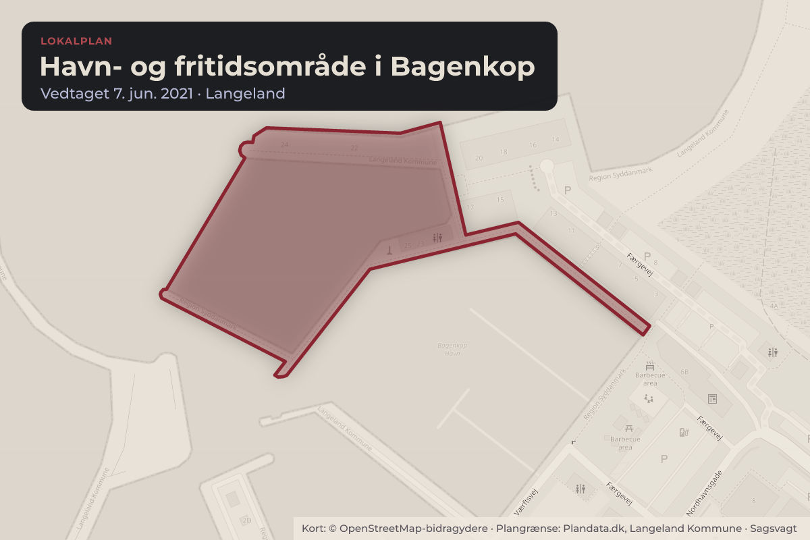
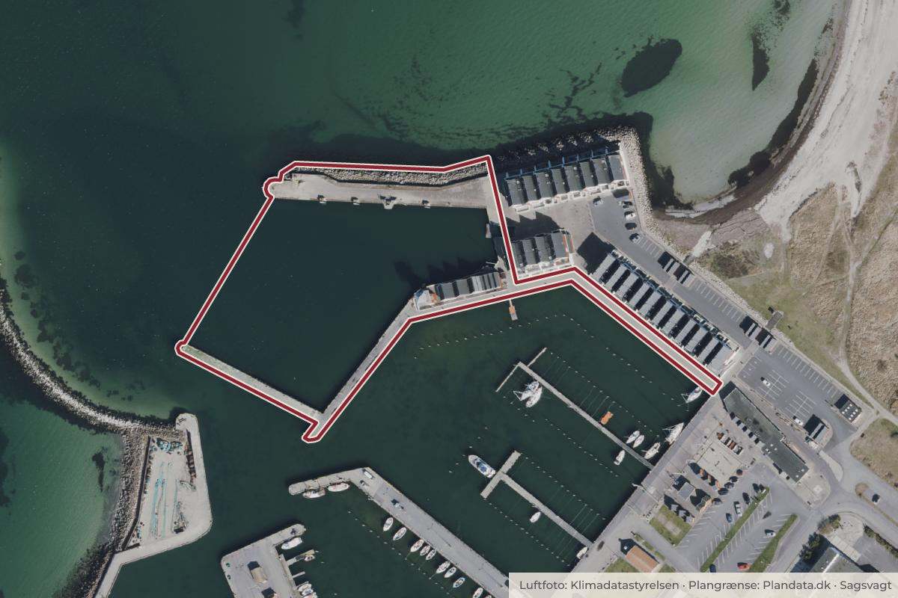

Besluttet 26. oktober, Teknik- og Havneudvalget, Langeland
Ansøgning om dispensation fra lokalplan 126 - Havn- og Fritidsområde i Bagenkop

Kort: © OpenStreetMap-bidragydere. Plangrænse: Plandata.dk, Langeland Kommune.

Kort fortalt
- Hvem
- Teknik- og Havneudvalget, Langeland Kommune
- Hvornår
- Mandag 26. oktober 2026
- Status
- Besluttet. Godkendt.
Er noget forkert her? Skriv til os
Læs hele sagen Kommunens egen tekst
Sagsfremstilling
Beslutningsgrundlag
Ejendommen er omfattet af lokalplan 126 - Havn- og Fritidsområde i Bagenkop som blandt
andet har til formål at sikre etablering af lystbådehavn og etablering af projektet ”SHORES
Langeland”, som tager udgangspunkt i oplevelser med vand.
SHORES Langeland skal blandt andet munde ud i etableringen af et nyt kraftcenter for
vandaktivitet i det gamle færgeleje i Bagenkop Havn.
SHORES Langeland har som overordnet målsætning at aktivere Langelands stedbundne
potentiale som Øhavets hotspot for vandaktiviteter.
Link til lokalplan 126 - Havn- og Fritidsområde i Bagenkop:
https://dokument.plandata.dk/20_10617365_1623220878842.pdf
Ansøger ønsker følgende:
Etablering af ekstra højde på det ansøgte udspringstårn.
Ansøgers begrundelse
Jf. lokalplan nr. 126, §6.8 og §6.9, er den maksimale byggehøjde i delområde 2.1 fastsat til 17
meter, målt fra kajkanten. Da en landmåler har fastlagt kajkantens kote til 1,89 m, udgør den
maksimalt tilladte byggehøjde kote 18,89 m.
Det permanente udspringstårn opføres med den øverste platform i kote 17,0 m og et gelænder
op til kote 18,6 m. Tårnet overholder dermed i sin daglige form lokalplanens bestemmelser.
Bygherren, Langeland Kommune, ønsker, at der kan afholdes udspringskonkurrencer. Dette
forudsætter, at der i disse perioder kan monteres en midlertidig platform i kote 20,0 m med et
rækværk på ca. 1,5 m.
Den midlertidige platform forventes kun at være i brug ca. to gange årligt med en varighed af
ca. én uge pr. gang.
Der ansøges hermed om en tilbagevendende dispensation fra lokalplanens maksimale
byggehøjde, kote 18,89 m, til opsætning af en midlertidige platform ca. to gange årligt. I disse
afgrænsede perioder vil byggeriet overstige den tilladte kote på følgende måde:
Selve platformen vil overskride den tilladte højde med 1,11 m.
Rækværket vil overskride den tilladte højde med 2,61 m.
Administrationens bemærkninger
Den påtænkte overbygning, vurderes ikke at give skygge- og indkigsgener ind imod
omkringliggende bygninger i det den nærmeste bolig er cirka 85 meter og 65 meter til
bygninger der anvendes til erhverv og fritidsformål.
Der er fremkommet følgende bemærkninger i forbindelse med nabohøringen:
Der er ikke udført nabohøring, da det vurderes at den påtænkte overbygning er af underordnet
karakter og ikke vil give anledning til ekstra støj- og indbliksgener i den begrænsede periode,
der søges dispensation om.
Afledte konsekvenser
Det vurderes, at ændringen i forhold til lokalplanen ikke vil være skæmmende og ikke påføre
de omkringliggende naboer væsentlige gener, ud over det der må forventes, når man bor i et
aktivt havnemiljø.
Tilsvarende projekter må forvente at kunne opnå lignende dispensationer.
Indstilling
Administrationen indstiller:
At der meddeles dispensation til det ansøgte med følgende vilkår:
At overbygningen opføres som ansøgt og kan opsættes og benyttes i 2 x 1 uge om året
som ansøgt, hvor der hertil lægges en uge i forhold til op- og nedtagning til hvert af de to
arrangementer.
Beslutning
Godkendt.
Kilde: Langeland Kommune, Teknik- og Havneudvalget, referat fra mødet mandag 26. oktober 2026, punkt 3. Læs den originale sag hos kommunen.